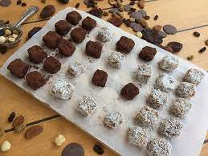

2-3 adet (500 g) aromalı elma (granny smith, macoun, ya da empire gibi)
2 yemek kaşığı Hindistan cevizi şekeri
50 g pikan cevizi
Yarım çay kaşığı tarçın, az tuz, az karanfil, az muskat
Yapılışı
Hamuru için; buğday unu, yulaf, hindistan cevizi yağı, tuz ve hindistan cevizi şekerini mutfak robuta koyun ve hamur kıvamına gelinceye kadar karıştırın.
İç dolguyu hazırlamak için elmaların kabuklarını soyun ve ince ince dilimleyin.
Üzerine hindistan cevizi şekeri, pikan cevizi, tuz, karanfil, tarçın ve muskat ekleyin.
23 cm çapında yuvarlak tart kalıbına önce iç dolgu malzemesini, üzerine ise hazırladığınız hamuru yayın.
Tatlıyı 180 derece fırında 45 dakika kadar pişirin.
Diyet Aşure
Malzemeler
1 su bardağı nohut
3 su bardağı buğday
1 su bardağı kuru fasulye
5-6 adet kuru incir
5-6 adet kuru kayısı
1 avuç kuru üzüm
1 portakal rendesi
2-3 adet karanfil
1 çubuk tarçın
1.5 su bardağı süt
2 çay bardağı çam balı
Üzeri İçin:
Nar.
Antep fıstığı
Fındık
Tarçın
Yapılışı
Öncelikle nohut ve kuru fasulyeyi farklı kaplara koyun ve bir gece önceden ıslatın.
Buğdayı ise düdüklü tencereye koyun. Buğdayların üzerini 3 parmak geçecek şekilde su ekleyin.
Tencereden kaynama sesi geldikten 20 dakika sonra ocaktan alabilirsiniz.
Bu işlemleri akşam uyguladıktan sonra, sabah büyük bir tencere alın ve su kaynatın.
Kaynayan suyun içerisine haşlanmış buğdayı ekleyin. 15 dakika sonra fasulye ve nohutu da ekleyin.
Bu sırada kuru meyveleri yıkayın ve suyun içerisinde bekletin. Kuru meyveleri küçük parçalar halinde doğrayın.
10 dakika boyunca birlikte pişen kuru fasulye, nohut ve buğdayın üzerine doğradığınız kuru meyveleri ilave edin.
Karanfil, portakal kabuğu rendesi ve çubuk tarçını da ilave edin.
1-1.5 su bardağı sütü de ekleyin. Ardından çam balını da ekledikten sonra fokurdayana kadar kısık ateşte pişirin.
Aralıklı olarak malzemeleri karıştırmayı da unutmayın. Hazırladığınız aşureleri kaselere paylaştırın ve üzerini nar, tarçın ve fıstık ile süsleyin. Afiyet olsun.
Yulaflı Çikolata Topları
Malzemeler
1.5 su bardağı yulaf ezmesi
1 yemek kaşığı Hindistan cevizi
4 yemek kaşığı sürülebilir çikolata
Yarım çay bardağı damla çikolata
Yapılışı
ulafı mutfak robotundan geçirip geniş bir karıştırma kabına alın. Hindistan cevizi ve sürülebilir çikolatayı ilave edip hafif yoğurun. Damla çikolatayı ekleyip karıştırın. Harçtan ceviz büyüklüğünde parçalar kopartıp elinizle yuvarlayın.
Çikolata toplarını yağlı kağıt serili bir kaba dizin. Buzdolabında 2 saat dinlendirip soğuk servis yapın.
İçi Dolgulu Çikolatalı Fit Kurabiye
Malzemeler
1 kahve fincanı tam buğday ya da yulaf unu
1 kahve fincanı şekersiz fıstık ezmesi
1/3 kahve fincanı agave şurubu ya da pekmez
Yarım paket kabartma tozu ya da vanilya
70-80 g vegan bitter çikolata
Yapılışı
Un, fıstık ezmesi, pekmez (ya da agave şurubu) ve kabartma tozunu bir kaseye alıp, hamur haline gelene kadar elinizle yoğurun.
Hamurdan istediğiniz boyutlarda kurabiyeler yapın. Dilerseniz içine, dilerseniz üzerine çikolata parçaları ilave edin.
Kurabiyeleri bir tepsiye dizdikten sonra 160 derecede ısıtılmış fırında 12-13 dakika pişirin.
İki Malzemeli Dondurma
Malzemeler
2 adet muz
1 kase çilek (veya sevdiğiniz başka bir meyve)
1 kaşık akçaağaç şurubu (isteğe göre tatlandırmak için)
Yapılışı
Muzu ve çileği irice doğrayıp, blender’da püre haline getirin.
Elde ettiğiniz karışımı dondurma kalıplarına döktükten sonra 5-6 saat veya bir gece dondurucuda beklettikten sonra servis edin.
Sağlıklı Magnolia
Malzemeler
Muhallebi İçin:
2 su bardağı yarım yağlı süt
3 yemek kaşığı tam buğday unu
2 yemek kaşığı bal
2-3 damla vanilya
Bisküvi İçin:
4 yemek kaşığı yulaf ezmesi
1 avuç badem
1 tatlı kaşığı hindistan cevizi yağı
İçi İçin:
Muz veya çilek
Yapılışı
Muhallebi için süt ve unu bir tencerede kısık ateşte kıvam alıncaya kadar pişirin. Ocaktan aldıktan bir süre sonra bal ve vanilyayı ekleyerek karıştırın.
Bisküvi kırıntıları için malzemeleri robottan geçirin. Daha sonra bir tavada hafif rengi dönene kadar pişirin.
Bir bardak veya kaseye ilk önce bisküvi kırıntılarını ekleyin, sonra dilimlediğiniz muzları dizin ve muhallebiyi ekleyin. En son üzerine kalan bisküvi kırıntılarını ekleyin ve süsleyin...
Fit Lokum

Malzemeler
15-20 adet gün kurusu kayısı
1 su bardağı dövülmüş fındık (başka kuruyemişte olur)
1 su bardağı hindistan cevizi
Üstü İçin:
Kakao
Hindistan cevizi
Yapılışı
Gün kurusu kayısıları 10 dakika sıcak suda bekletilip yumuşatın.
Yumuşayan kayısıları püre haline gelene kadar robottan geçirin.
Fındık ve hindistan cevizini ekleyip tüm malzemeyi karıştırın.
Tezgaha folyo serip lokumu üstüne alın. Şekil verilirin ve 1 saat buzdolabında dinlendirin.
Daha sonra dilimleyip yarısı kakaoya yarısını hindistan cevizine bulayın. Afiyet olsun.
Çilek Suyu
Malzemeler
1 litre su
1 kg çilek
1 su bardağı toz şeker
Yapılışı
İlk olarak tarifte kullanacağınız çilekleri yıkayıp temizleyin. Ardından tencerenin içerisine suyu ve çilekleri alarak 5 dakika kaynatın.
Tencereyi ocaktan alıp ılıyana kadar bekleyin. Bu esnada süzgeci bir kabın üzerine alın ve kaynattığınız çilekleri süzgece dökün.
Süzgecin üstünde kalan çilekleri kaşık yardımıyla ezin ve püre haline getirin. Ezme yöntemiyle çileklerin süzgeçten kaba dökülmesini sağlayın.
Karışıma şeker ilave etmek istiyorsanız, çilek püresini tekrardan tencereye alın. Ve 5 dakika daha kaynatın.
Hazırladığınız karışımı cam kavanozlara dökün. Tüketmek istediğinizde bir su bardağının yarısına çilek karışımını ekleyin. Üzerine içme suyu ilave edin ve buz parçalarıyla servis edin.
Karışıma bal ilave etmek istiyorsanız, çilek püresini kavanozlara doldurun. Tüketeceğiniz zaman bardağın yarısına çilek püresi, 1-2 çay kaşığı bal ve yarım bardak su ilave edin. Afiyet olsun.
Avokado Ve Chia Tohumlu Puding
Malzemeler
4 yemek kaşığı chia tohumu
1 su bardağı Hindistan cevizi sütü
1/2 avokado
2 yemek kaşığı matcha
2 yemek kaşığı bal
Yapılışı
İlk olarak hindistan cevizi sütü, avokado ve matcha çayı tozunu blender’da yüksek devirde karıştırın.
İlk olarak hindistan cevizi sütü, avokado ve matcha çayı tozunu blender’da yüksek devirde karıştırın.
Ağzını kapatıp buzdolabında yarım saat bekletin. Yarım saat sonra çıkarıp tekrar karıştırın, küçük bardaklara paylaştırıp buzdolabına koyun.
En az 2 saat daha bekletip mevsim meyveleri ile süsleyip tüketin.
Avakado ve chia tohumlu pudingi, çikolata sosu ile tatlandırabilirsiniz. Afiyet olsun.
Fit Raffaello
Malzemeler
1 su bardağı organik rende Hindistan cevizi (250 ml)
2 yemek kaşığı organik agave şurubu
3 yemek kaşığı organik Hindistan cevizi unu
1 yemek kaşığı organik Hindistan cevizi yağı (katı halde)
100 g Hindistan cevizi sütü (dolaptan çıktığında üzerindeki kısım-1/2 su bardağından 1 parmak az)
Üzeri İçin:
Organik Hindistan cevizi rendesi
Yapılışı
Tüm malzemeleri karıştırın ve 10 dakika dolapta bekletin.
Ardından elinizle yuvarlak şekil verip rende Hindistan cevizine bulayın.